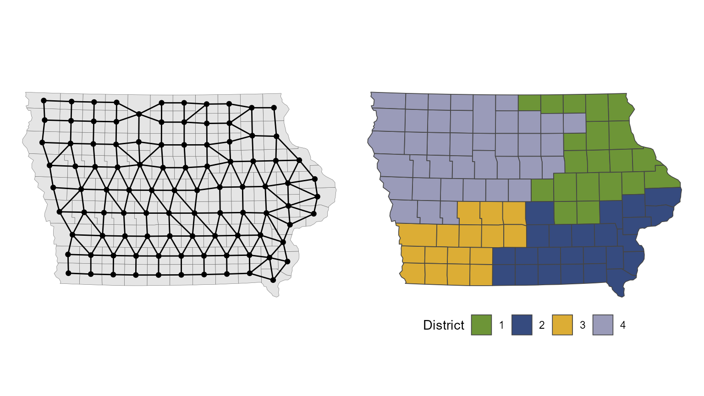
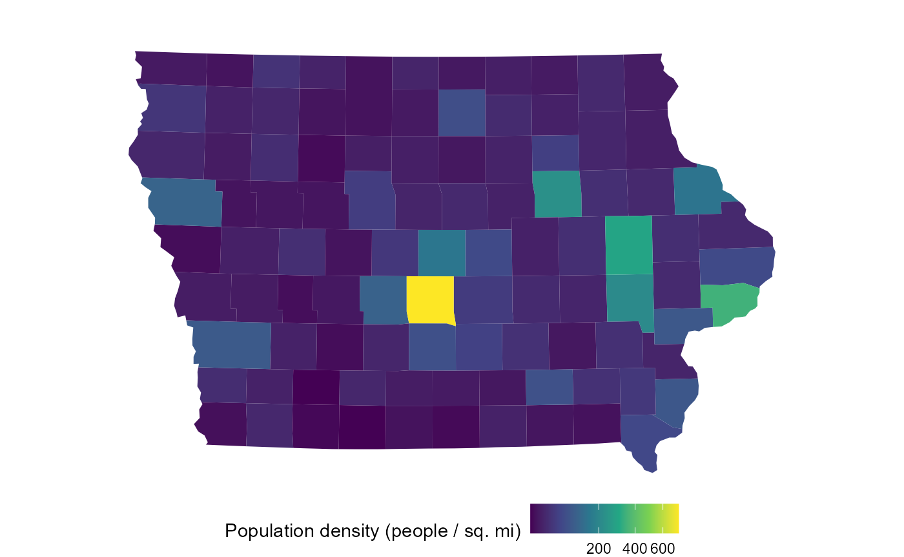
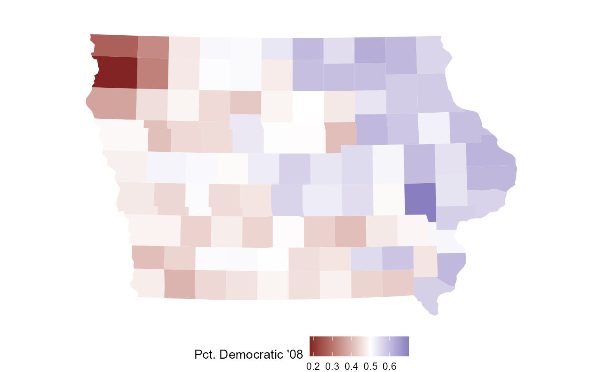
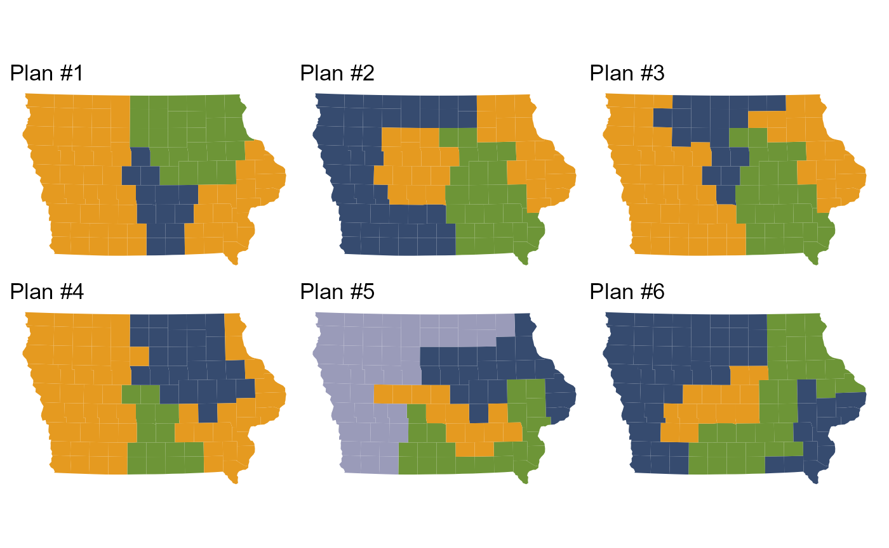
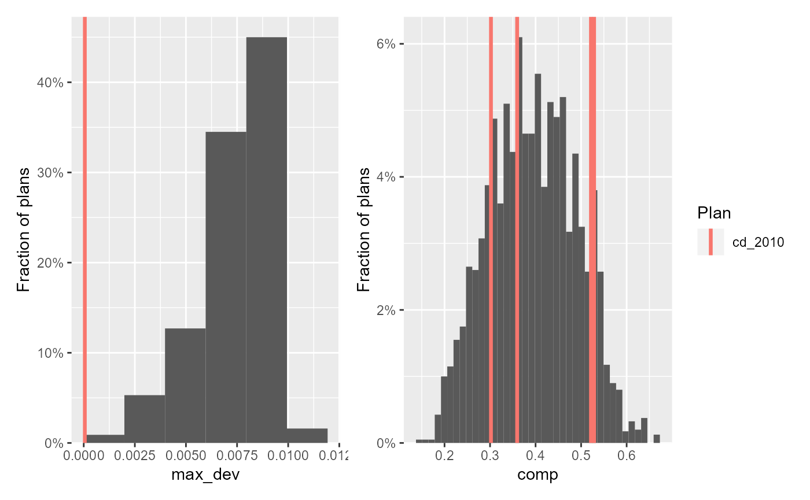
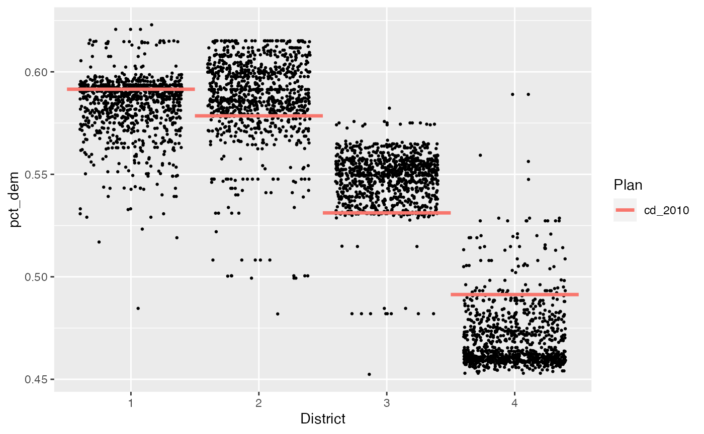
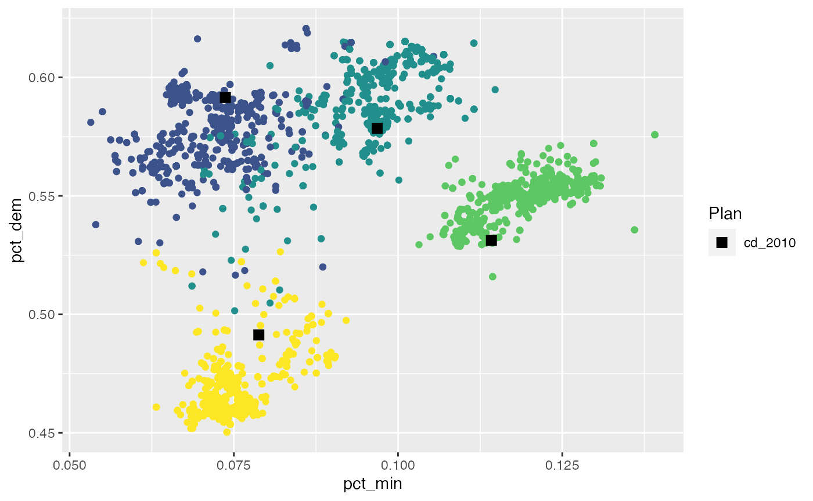

The redist package provides algorithms and tools for scalable and replicable redistricting analyses. This vignette introduces the package by way of an analysis of redistricting in the state of Iowa, which can broken down into four distinct steps:
- Compiling, cleaning, and preparing the data
- Defining the redistricting problem
- Simulating redistricting plans
- Analyzing the simulated plans
First, however, a brief overview of the package itself.
The redist package
To install redist, follow the instructions in the README.
For more information on package components, check out the full documentation.
Algorithms
The package contains a variety of redistricting simulation and enumeration algorithms. Generally you will use one of the following three algorithms:
-
redist_smc(), the recommended algorithm for most purposes.1 -
redist_mergesplit(), a MCMC version of the SMC proposal.2 -
redist.mcmc(), another MCMC algorithm which uses more local proposals.3
The other algorithms are
-
redist.enumpart()for efficient enumeration of small maps.4 -
redist_shortburst()for optimizing a plan according to a user-provided criterion.5 -
redist.rsg()andredist.crsg(), which do not sample from a known target distribution.6
Compiling, cleaning, and preparing the data
The most time-consuming part of a redistricting analysis, like most data analyses, is collecting and cleaning the necessary data. For redistricting, this data includes geographic shapefiles for precincts and existing legislative district plans, precinct- or block-level demographic information from the Census, and precinct-level political data. These data generally come from different sources, and may not fully overlap with each other, further complicating the problem.
redist is not focused on this data collection process. The geomander package contains many helpful functions for compiling these data, and fixing problems in geographic data.
Sources for precinct-level geographic and political information include the MIT Election Lab, the Census, the Redistricting Data Hub, the Voting and Election Science Team, the Harvard Election Data Archive, the Metric Geometry and Gerrymandering Group, and some state websites.
Iowa
For this analysis of Iowa, we’ll use the data included in the package, which was compiled from the Census and the Harvard Election Data Archive. It contains, for each county, the total population and voting-age population by race, as well as the number of votes for President in 2008. The geometry column contains the geographic shapefile information.
data(iowa)
print(iowa)
#> Simple feature collection with 99 features and 14 fields
#> geometry type: MULTIPOLYGON
#> dimension: XY
#> bbox: xmin: 4081849 ymin: 2879102 xmax: 5834228 ymax: 4024957
#> projected CRS: NAD83(HARN) / Iowa North (ftUS)
#> First 10 features:
#> fips name cd pop white black hisp vap wvap bvap hvap tot_08
#> 1 19001 Adair 3 7682 7507 11 101 5957 5860 5 53 4053
#> 2 19003 Adams 3 4029 3922 8 37 3180 3109 6 22 2206
#> 3 19005 Allamakee 1 14330 13325 109 757 11020 10430 82 425 7059
#> 4 19007 Appanoose 2 12887 12470 55 181 9993 9745 40 99 6176
#> 5 19009 Audubon 4 6119 6007 9 37 4780 4714 5 27 3435
#> 6 19011 Benton 1 26076 25387 93 275 19430 19068 49 155 13712
#> 7 19013 Black Hawk 1 131090 109968 11493 4907 102594 89541 7677 2865 64775
#> 8 19015 Boone 4 26306 25194 202 505 20027 19448 103 260 13929
#> 9 19017 Bremer 1 24276 23459 186 239 18763 18242 155 137 12871
#> 10 19019 Buchanan 1 20958 20344 59 243 15282 14979 32 128 10338
#> dem_08 rep_08 geometry
#> 1 1924 2060 MULTIPOLYGON (((4592338 328...
#> 2 1118 1046 MULTIPOLYGON (((4528041 315...
#> 3 3971 2965 MULTIPOLYGON (((5422507 401...
#> 4 2970 3086 MULTIPOLYGON (((5032545 306...
#> 5 1739 1634 MULTIPOLYGON (((4487363 341...
#> 6 7058 6447 MULTIPOLYGON (((5246216 357...
#> 7 39184 24662 MULTIPOLYGON (((5175640 369...
#> 8 7356 6293 MULTIPOLYGON (((4741174 354...
#> 9 6940 5741 MULTIPOLYGON (((5174636 379...
#> 10 6050 4139 MULTIPOLYGON (((5302846 370...Defining the redistricting problem
A redistricting problem is defined by the map of the precincts, the number of contiguous districts to divide the precincts into, the level of population parity to enforce, and any other necessary constraints that must be imposed.
Determining the relevant constraints
In Iowa, congressional districts are constructed not out of precincts but out of the state’s 99 counties, and in the 2010 redistricting cycle, Iowa was apportioned four congressional districts, down one from the 2000 cycle. Chapter 42 of the Iowa Code provides guidance on the other constraints imposed on the redistricting process (our emphasis added):
42.4 Redistricting standards.
…
1.b. Congressional districts shall each have a population as nearly equal as practicable to the ideal district population, derived as prescribed in paragraph “a” of this subsection. No congressional district shall have a population which varies by more than one percent from the applicable ideal district population, except as necessary to comply with Article III, section 37 of the Constitution of the State of Iowa.
…
3. Districts shall be composed of convenient contiguous territory. Areas which meet only at the points of adjoining corners are not contiguous.
4. Districts shall be reasonably compact in form, to the extent consistent with the standards established by subsections 1, 2, and 3. In general, reasonably compact districts are those which are square, rectangular, or hexagonal in shape, and not irregularly shaped, to the extent permitted by natural or political boundaries….
5. No district shall be drawn for the purpose of favoring a political party, incumbent legislator or member of Congress, or other person or group, or for the purpose of augmenting or diluting the voting strength of a language or racial minority group. In establishing districts, no use shall be made of any of the following data:
- Addresses of incumbent legislators or members of Congress.
- Political affiliations of registered voters.
- Previous election results.
- Demographic information, other than population head counts, except as required by the Constitution and the laws of the United States.
The section goes on to provide two specific measures of compactness that should be used to compare districts, one of which is the total perimeter of all districts. If the total perimeter is small, then the districts relatively compact.
Contiguity of districts and no reliance on partisan or demographic data are built-in to redist. We’ll look at how to specify the desired population deviation (no more than 1% by law) in the next section, and discuss compactness in the simiulation section.
Setting up the problem in redist
In redist, a basic redistricting problem is defined by an object of type redist_map, which can be constructed using the eponymous function. The user must provide a vector of population counts (defaults to the pop column, if one exists) and the desired population parity, and the number of districts. The latter can be inferred if a reference redistricting plan exists. For Iowa, we’ll use the adopted 2010 plan as a reference.
iowa_map = redist_map(iowa, existing_plan=cd, pop_tol=0.01)
print(iowa_map)
#> A redist_map object with 99 units and 16 fields
#> To be partitioned into 4 districts with population between 761,588.8 - 1.0% and 761,588.8 + 1.0%
#> With geometry:
#> bbox: xmin: 4081849 ymin: 2879102 xmax: 5834228 ymax: 4024957
#> projected CRS: NAD83(HARN) / Iowa North (ftUS)
#> # A tibble: 99 x 16
#> fips name cd pop white black hisp vap wvap bvap hvap tot_08
#> * <chr> <chr> <int> <dbl> <dbl> <dbl> <dbl> <dbl> <dbl> <dbl> <dbl> <dbl>
#> 1 19001 Adair 3 7682 7507 11 101 5957 5860 5 53 4053
#> 2 19003 Adams 3 4029 3922 8 37 3180 3109 6 22 2206
#> 3 19005 Allama… 1 14330 13325 109 757 11020 10430 82 425 7059
#> 4 19007 Appano… 2 12887 12470 55 181 9993 9745 40 99 6176
#> 5 19009 Audubon 4 6119 6007 9 37 4780 4714 5 27 3435
#> 6 19011 Benton 1 26076 25387 93 275 19430 19068 49 155 13712
#> 7 19013 Black … 1 131090 109968 11493 4907 102594 89541 7677 2865 64775
#> 8 19015 Boone 4 26306 25194 202 505 20027 19448 103 260 13929
#> 9 19017 Bremer 1 24276 23459 186 239 18763 18242 155 137 12871
#> 10 19019 Buchan… 1 20958 20344 59 243 15282 14979 32 128 10338
#> # … with 89 more rows, and 4 more variables: dem_08 <dbl>, rep_08 <dbl>,
#> # geometry <MULTIPOLYGON [US_survey_foot]>, adj <list>This looks much the same as iowa itself, but metadata has been added, and there’s a new column, adj.
Adjacency-based redistricting
All redistricting algorithms operate on an adjacency graph, which is constructed from the actual precinct or county geography. In the adjacency graph, every precinct or county is a node, and two nodes are connected by an edge if the corresponding precincts are geographically adjacent.7 Creating a contiguous set of districts as part of a redistricting plan then corresponds to creating a partition of the adjacency graph.
The redist_map() function automatically computes the adjacency graph from the provided shapefile (though one can be provided directly as well), and stores it in the adj column as an adjacency list, which is, for each precinct, a list of neighboring precincts. As part of this process, the adjacency graph is checked for global contiguity (no islands), which is necessary for the redistricting algorithms to function properly.
We can visualize the adjacency graph by plotting the redist_map object.
plot(iowa_map)
Pre-processing
Often, we want to only analyze a portion of a map, or hold some districts fixed while others are re-simulated. We may also want to implement a status-quo-type constraint that encourages simulated districts to be close to a reference plan. This can be accomplished by freezing the “cores” of each district.
All of these operations fall under the umbrella of map pre-processing, and redist is well-equipped to handle them. You can use familiar dplyr verbs like filter() and summarize(), along with new redist operations like freeze(), make_cores(), and merge_by(), to operate on redist_map objects. The package will make the appropriate modifications to the geometry and adjacency graph in the background.
The map pre-processing vignette contains more information and examples about these operations.
Exploring the geography
To get a feel for the demographic and political geography of the state, we’ll make some plots from the iowa_map object. We see that the state is mostly rural and white, with Polk county (Des Moines) the largest and densest. Politically, most counties are relatively balanced between Democrats and Republicans (at least in the ’08 election), though there is a rough east-west gradient.
areas = as.numeric(units::set_units(sf::st_area(iowa_map$geometry), mi^2))
plot(iowa_map, fill = pop / areas) +
scale_fill_viridis_c(name="Population density (people / sq. mi)",
trans="sqrt")
plot(iowa_map, fill = dem_08 / tot_08) +
scale_fill_gradient2(name="Pct. Democratic '08", midpoint=0.5)
plot(iowa_map, fill = wvap / vap) +
scale_fill_viridis_c()Simulating redistricting plans
The crux of a redistricting analysis is actually simulating new redistricting plans. As discussed above, redist provides several algorithms for performing this simulation, and each has its own advantages and incorporates a different set of constraints. Here, we’ll demonstrate use of the redist_smc() algorithm, a Sequential Monte Carlo (SMC)-based procedure which is the recommended choice for most redistricting analyses.
SMC creates plans directly, by drawing district boundaries one at a time, as illustrated below.

Because of the way districts are drawn in SMC, the generated districts are relatively compact by default. This can be further controlled by the compactness parameter (although compactness=1 is particularly computationally convenient).
To simulate, we call redist_smc() on our redist_map object.
iowa_plans = redist_smc(iowa_map, nsims=1000, compactness=1)
#> SEQUENTIAL MONTE CARLO
#> Sampling 1000 99-unit maps with 4 districts and population between 753973 and 769205.
#> Making split 1 of 3
#> Using k = 2
#> Iteration 100 / 1000
#> Iteration 200 / 1000
#> Iteration 300 / 1000
#> Iteration 400 / 1000
#> Iteration 500 / 1000
#> Iteration 600 / 1000
#> Iteration 700 / 1000
#> Iteration 800 / 1000
#> Iteration 900 / 1000
#> Iteration 1000 / 1000
#> 14.6% acceptance rate.
#> Resampling effective sample size: 981.6 (98.2% efficiency).
#> Making split 2 of 3
#> Using k = 2
#> Iteration 100 / 1000
#> Iteration 200 / 1000
#> Iteration 300 / 1000
#> Iteration 400 / 1000
#> Iteration 500 / 1000
#> Iteration 600 / 1000
#> Iteration 700 / 1000
#> Iteration 800 / 1000
#> Iteration 900 / 1000
#> Iteration 1000 / 1000
#> 13.3% acceptance rate.
#> Resampling effective sample size: 964.6 (96.5% efficiency).
#> Making split 3 of 3
#> Using k = 2
#> Iteration 100 / 1000
#> Iteration 200 / 1000
#> Iteration 300 / 1000
#> Iteration 400 / 1000
#> Iteration 500 / 1000
#> Iteration 600 / 1000
#> Iteration 700 / 1000
#> Iteration 800 / 1000
#> Iteration 900 / 1000
#> Iteration 1000 / 1000
#> 4.9% acceptance rate.
#> Resampling effective sample size: 947.0 (94.7% efficiency).By default, redist_smc() prints a good deal of diagnostic information. While verbose, it is important to monitor this output to ensure the algorithm is working properly. The key number to keep an eye on is the resampling effective sample size/resampling efficiency. This number should be as close to the nominal sample size (100%) as possible, and values less than 5–10% generally indicate problems—constraints which are too strong or difficult to satisfy. Here, the resampling efficiencies are above 90% at each stage, which is excellent.
The output from the algorithm is a redist_plans object, which stores a matrix of district assignments for each precinct and simulated plans, and a table of summary statistics for each district and simulated plan.
print(iowa_plans)
#> 1000 sampled plans with 4 districts from a 99-unit map,
#> drawn using Sequential Monte Carlo
#> With plans resampled from weights
#> Plans matrix: num [1:99, 1:1000] 1 1 4 3 1 4 4 3 4 4 ...
#> # A tibble: 4,000 x 3
#> draw district total_pop
#> * <fct> <int> <dbl>
#> 1 1 1 760191
#> 2 1 2 763218
#> 3 1 3 766215
#> 4 1 4 756731
#> 5 2 1 761871
#> 6 2 2 756071
#> 7 2 3 763041
#> 8 2 4 765372
#> 9 3 1 761011
#> 10 3 2 760885
#> # … with 3,990 more rowsWe can explore specific simulated plans with redist.plot.plans().
redist.plot.plans(iowa_plans, draws=1:6, geom=iowa_map)
Analyzing the simulated plans
A redist_plans object, the output of a sampling algorithm, links a matrix of precinct assignments to a table of district statistics, and this linkage makes analyzing the output a breeze.
The first step is generally to add a reference plan to a set of redistricting plans so that the reference can be compared to the simulated baseline. In problems with a small (generally fewer than 7) number of districts, it may also be possible to renumber the simulated districts (which have random numbers in general) to match the reference plan as closely as possible. This adds a pop_overlap column which measures how much of the population is in the same district in both a given plan and the reference plan.
iowa_plans = add_reference(iowa_plans, iowa_map$cd, "2010 Adopted") %>%
match_numbers(iowa_map$cd)
print(iowa_plans)
#> 1000 sampled plans and 1 reference plan with 4 districts from a 99-unit map,
#> drawn using Sequential Monte Carlo
#> With plans resampled from weights
#> Plans matrix: int [1:99, 1:1001] 3 3 1 2 4 1 1 4 1 1 ...
#> # A tibble: 4,004 x 4
#> draw district total_pop pop_overlap
#> <fct> <ord> <dbl> <dbl>
#> 1 2010 Adopted 1 761548 1
#> 2 2010 Adopted 2 761624 1
#> 3 2010 Adopted 3 761612 1
#> 4 2010 Adopted 4 761571 1
#> 5 1 1 756731 0.587
#> 6 1 2 763218 0.587
#> 7 1 3 766215 0.587
#> 8 1 4 760191 0.587
#> 9 2 1 756071 0.660
#> 10 2 2 765372 0.660
#> # … with 3,994 more rowsThen we can add summary statistics by district, using redist’s analysis functions. Here, we’ll compute the population deviation, the perimeter-based compactness measure related to the Iowa Code’s redistricting requirements, and the fraction of minority voters and two-party Democratic vote share by district.
target_pop = sum(iowa_map$pop) / 4
county_perims = redist.prep.polsbypopper(iowa_map, iowa_map$adj)
iowa_plans = iowa_plans %>%
mutate(pop_dev = abs(total_pop / target_pop - 1),
comp = distr_compactness(iowa_map, "PolsbyPopper", perim_df=county_perims),
pct_min = group_frac(iowa_map, vap - wvap, vap),
pct_dem = group_frac(iowa_map, dem_08, dem_08 + rep_08))
print(iowa_plans)
#> 1000 sampled plans and 1 reference plan with 4 districts from a 99-unit map,
#> drawn using Sequential Monte Carlo
#> With plans resampled from weights
#> Plans matrix: int [1:99, 1:1001] 3 3 1 2 4 1 1 4 1 1 ...
#> # A tibble: 4,004 x 8
#> draw district total_pop pop_overlap pop_dev comp pct_min pct_dem
#> <fct> <ord> <dbl> <dbl> <dbl> <dbl> <dbl> <dbl>
#> 1 2010 Adopted 1 761548 1 0.0000535 0.302 0.0737 0.592
#> 2 2010 Adopted 2 761624 1 0.0000463 0.360 0.0968 0.579
#> 3 2010 Adopted 3 761612 1 0.0000305 0.529 0.114 0.531
#> 4 2010 Adopted 4 761571 1 0.0000233 0.522 0.0788 0.491
#> 5 1 1 756731 0.587 0.00638 0.376 0.0707 0.563
#> 6 1 2 763218 0.587 0.00214 0.534 0.101 0.615
#> 7 1 3 766215 0.587 0.00607 0.299 0.121 0.551
#> 8 1 4 760191 0.587 0.00184 0.360 0.0698 0.460
#> 9 2 1 756071 0.660 0.00725 0.481 0.0791 0.594
#> 10 2 2 765372 0.660 0.00497 0.487 0.0907 0.575
#> # … with 3,994 more rowsFrom there, it’s quick to turn these into plan-level summary statistics.
plan_sum = group_by(iowa_plans, draw) %>%
summarize(max_dev = max(pop_dev),
avg_comp = mean(comp),
max_pct_min = max(pct_min),
dem_distr = sum(pct_dem > 0.5))
print(plan_sum)
#> 1000 sampled plans and 1 reference plan with 4 districts from a 99-unit map,
#> drawn using Sequential Monte Carlo
#> With plans resampled from weights
#> Plans matrix: int [1:99, 1:1001] 3 3 1 2 4 1 1 4 1 1 ...
#> # A tibble: 1,001 x 5
#> draw max_dev avg_comp max_pct_min dem_distr
#> <fct> <dbl> <dbl> <dbl> <int>
#> 1 2010 Adopted 0.0000535 0.428 0.114 3
#> 2 1 0.00638 0.392 0.121 3
#> 3 2 0.00725 0.399 0.122 3
#> 4 3 0.00297 0.379 0.121 3
#> 5 4 0.00504 0.440 0.114 3
#> 6 5 0.00576 0.457 0.107 3
#> 7 6 0.00865 0.402 0.115 3
#> 8 7 0.00690 0.427 0.113 3
#> 9 8 0.00828 0.430 0.119 3
#> 10 9 0.00908 0.398 0.125 3
#> # … with 991 more rowsThese tables of statistics are easily plotted using existing libraries like ggplot2, but redist provides a number of helpful plotting functions that automate some common tasks, like adding a reference line for the reference plan. The output of these functions is a ggplot object, allowing for further customization.
library(patchwork)
hist(plan_sum, max_dev) + hist(iowa_plans, comp) +
plot_layout(guides="collect")
We can see that the adopted plan has nearly complete population parity, and that its districts are roughly as compact on average as those simulated by the SMC algorithm.
One of the most common, and useful, plots, for studying the partisan characteristics of a plan, is to plot the fraction of a group (or party) within each district, and compare to the reference plan. Generally, we would first sort the districts by this quantity first, to make the numbers line up, but here we’ve already renumbered the districts to match the reference plan as closely as possible.
redist.plot.distr_qtys(iowa_plans, pct_dem, sort=FALSE, size=0.5)
We see that districts 1 and 2 look normal, but it appears that, relative to our ensemble, district 4 (NW Iowa) is more Democratic, and district 3 (SW Iowa, Des Moines) is less Democratic. However, the reference plan does not appear to be a complete outlier.
We might also want to look at how the Democratic fraction in each district compares to the fraction of minority voters. We can make a scatterplot of districts, and overlay the reference districts, using redist.plot.scatter. We’ll also color by the district number (higher numbers are in lighter colors).
Once again, we see that while district 1 and 2 of the reference plan look normal, district has a lower number of Democrats and minority voters than would otherwise be expected.
pal = scales::viridis_pal()(5)[-1]
redist.plot.scatter(iowa_plans, pct_min, pct_dem,
color=pal[subset_sampled(iowa_plans)$district]) +
scale_color_manual(values="black")
From here, it is easy to keep exploring, using the functionality of redist_plans and the built-in plotting functions. More complex model-based analyses could also be performed using the district-level or plan-level statistics.
from Sequential Monte Carlo for Sampling Balanced and Compact Redistricting Plans↩︎
based on Carter, D., Herschlag, G., Hunter, Z., and Mattingly, J. (2019). A merge-split proposal for reversible Monte Carlo Markov chain sampling of redistricting plans. arXiv preprint arXiv:1911.01503.↩︎
from Automated Redistricting Simulation Using Markov Chain Monte Carlo Journal of Computational and Graphical Statistics↩︎
from The Essential Role of Empirical Validation in Legislative Redistricting Simulation↩︎
from Cannon, S., Goldbloom-Helzner, A., Gupta, V., Matthews, J. N., & Suwal, B. (2020). Voting Rights, Markov Chains, and Optimization by Short Bursts. arXiv preprint arXiv:2011.02288.↩︎
from Jowei Chen and Jonathan Rodden (2013) “Unintentional Gerrymandering: Political Geography and Electoral Bias in Legislatures.” Quarterly Journal of Political Science. 8(3): 239-269.↩︎
for
redist’s purposes, adjacency requires that two regions touch at more than just one point or corner.↩︎